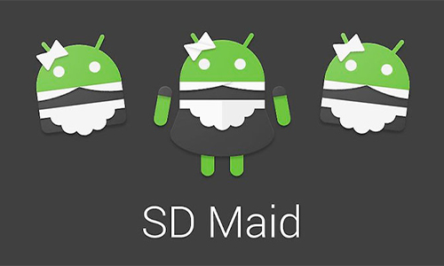
05.06.2022

SD Maid поможет держать Ваше устройство в чистоте и порядке!Это приложение,предназначенное для очистки системы от накопленного мусора,которое поможет вам освободить место на вашем Android-устройстве.
Скачать сейчас! Подробнее05.06.2022
YouTube Vanced - функциональный мод на YouTube для Android.Это неофициальная и модифицированная версия YouTube,дополненная такими функциями,как блокировка рекламы и трансляция в фоне.Приложение имеет многоязычный интерфейс.
Скачать сейчас! Подробнее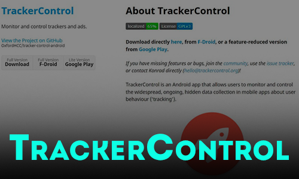
08.07.2022
TrackerControl позволяет пользователям отслеживать и контролировать повсеместный, постоянный, скрытый сбор данных в мобильных приложениях о поведении пользователей
Скачать сейчас! Подробнее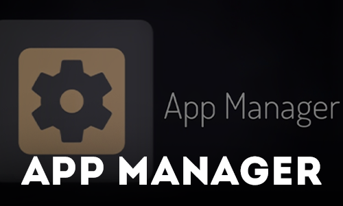
08.07.2022
Инструмент для получения подробной информация о приложениях и управление ими
Скачать сейчас!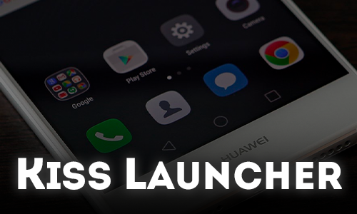
08.07.2022
KISS Launcher - это простой, минималистичный и невероятно легковесный для Андроид.
Скачать сейчас! Подробнее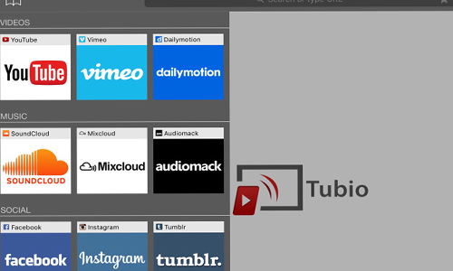
05.06.2022
Tubio - это приложение, которое позволяет транслировать видео из вашего Android на любой телевизор, подключённый к одной и той же WiFi-сети. Приложение совместимо со всеми моделями умных телевизоров.
Скачать сейчас! Подробнее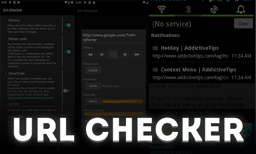
09.07.2022
Это небольшое приложение без рекламы служит промежуточным шагом к открытию URL-ссылок. Когда вы нажимаете на ссылку и выбираете это приложение, чтобы открыть его, отображается диалоговое окно с некоторой информацией о ссылке.
Скачать сейчас! Подробнее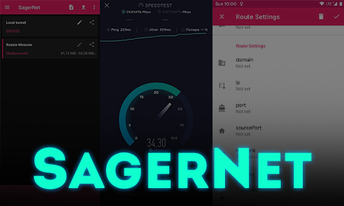
09.07.2022
Универсальный набор инструментов прокси для Android, написанный на Kotlin.
Скачать сейчас! Подробнее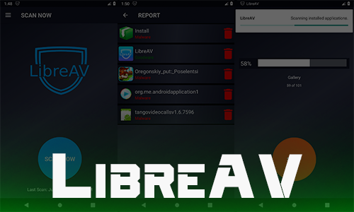
11.08.2022
LibreAV - антивирус с открытым исходным кодом который способен обнаружить вредоносное ПО на устройствах Android с использованием подхода машинного обучения, основанного на TensorFlow.
Скачать сейчас!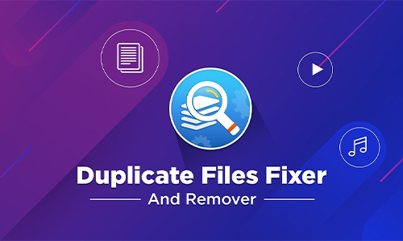
05.06.2022
Освободите место в вашем устройстве с помощью Duplicate Files Fixer и не храните на Android повторяющихся файлов благодаря простому сканированию. Один щелчок – всё что требуется для очистки вашего устройства от ненужных файлов.
Скачать сейчас! Подробнее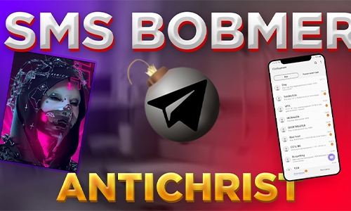
05.06.2022
Sms bomber Antichrist - это удобная программа для массовой рассылки SMS сообщений на разные номера.
Скачать сейчас! Подробнее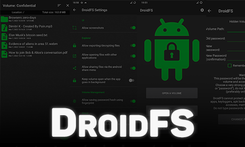
09.07.2022
DroidFS — это альтернативный способ использования прозрачных криптографических файловых систем на Android, который использует собственный внутренний файловый менеджер вместо монтирования виртуальных томов.
Скачать сейчас! Подробнее05.06.2021
VPN Master — очень простая, но эффективная программа для быстрой настройки и использования VPN для Windows.После её установки пользователю не придётся долго разбираться в интерфейсе ведь он интуитивно понятен.
Скачать сейчас! Подробнее